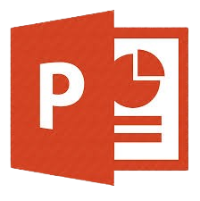
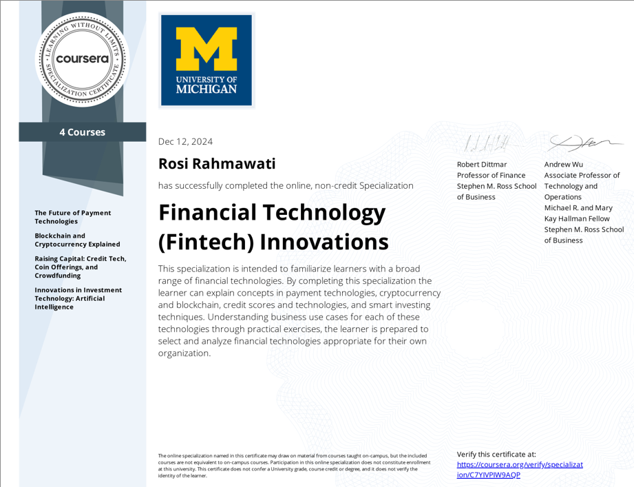
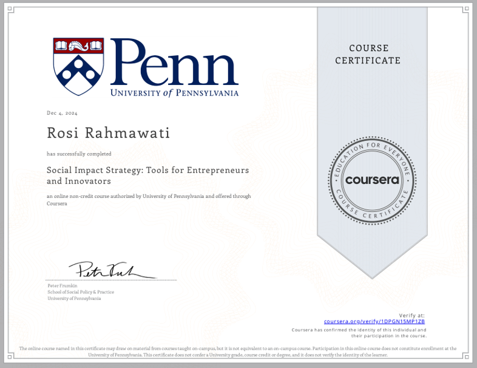
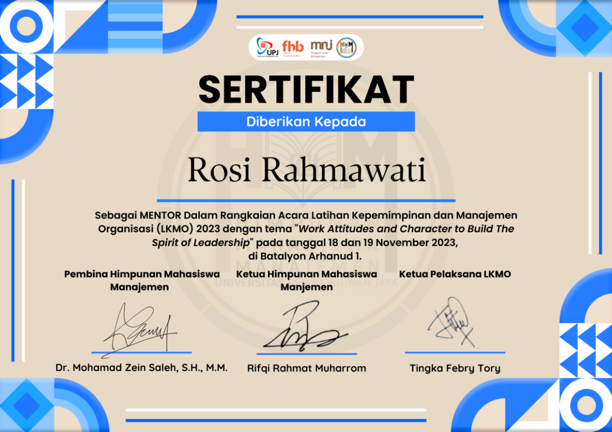
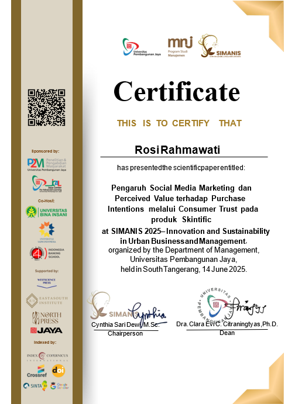

✓
✓
Foundations of Digital Marketing & E-commerce
Google · 7 Courses — Coursera
Des 2024
01 — Profil
Fresh Graduate Program Studi Manajemen yang memiliki pengalaman dalam bidang administrasi, pengelolaan dokumen, media sosial, serta pembuatan konten melalui kegiatan magang, organisasi, dan kepanitiaan. Terbiasa bekerja secara terstruktur, teliti, serta mampu beradaptasi dengan lingkungan kerja yang dinamis.
Memiliki kemampuan bekerja secara individu maupun dalam tim, didukung dengan sikap disiplin, bertanggung jawab, dan kemauan untuk terus belajar. Siap mengembangkan kompetensi serta memberikan kontribusi positif dalam lingkungan kerja yang profesional.
02 — Pengalaman
Divisi Pengendalian Operasional
Mengelola dokumen MPPA (Memo Permintaan Pencairan Anggaran): mencatat kode voucher transaksi, menyusun & mengarsipkan kuitansi, mencocokkan bukti fisik dengan data digital, serta merekap ke Excel. Menyusun kuitansi iuran jaminan sosial dan mengirim notifikasi tagihan ke mitra perusahaan melalui email.
Badan Penyelenggara Jaminan Produk Halal
Menyusun nota surat capaian kinerja, surat penawaran sewa gedung, dan nota dinas tim organisasi. Membantu menyesuaikan SKP dengan matriks kinerja karyawan, serta merevisi Anjab & ABK Analis Kebijakan Teknis sesuai Permenpan RB No. 1 Tahun 2020.
Menyusun laporan bulanan & laporan pertanggungjawaban klub, mengelola produksi dan publikasi konten video kegiatan di media sosial, serta menyusun proposal permohonan dana kegiatan.
Latihan Kepemimpinan & Manajemen Organisasi
Mengarahkan dan menjadi narahubung bagi mahasiswa baru, menyusun RAB divisi mentor, serta menyusun laporan pertanggungjawaban kegiatan.
Anggota Divisi Dana Usaha dan Divisi Kesehatan.
Menjalankan social media marketing kampus untuk meningkatkan minat calon mahasiswa.
03 — Keahlian

Microsoft PowerPoint04 — Sertifikat
✓
Google · 7 Courses — Coursera
Des 2024

✓University of Michigan · 4 Courses
Des 2024

✓University of Pennsylvania — Coursera
Des 2024

✓"Work Attitudes and Character to Build the Spirit of Leadership"
18–19 Nov 2023

✓Innovation & Sustainability in Urban Business, UPJ
14 Jun 2025
05 — Proyek
Cuplikan proyek visual — mulai dari branding usaha kecil, materi promosi kampus, hingga publikasi jurnal ilmiah.
Branding · UAS
Perancangan logo untuk kafe fiktif "Good.Luck" beserta poster promosi pembukaan lowongan kerja, dikerjakan sebagai proyek akhir mata kuliah.
Branding · Usaha Kecil
Logo catering serta rangkaian poster menu mingguan lengkap dengan sistem rotasi menu 4 minggu untuk usaha katering rumahan.
Promosi · Bazar Kampus
Desain banner penjualan produk keju gulung untuk area bazar Universitas Pembangunan Jaya.
Video · Iklan Kampus
Editing video promosi kampus, dari footage gedung hingga penyusunan alur cerita singkat untuk media sosial.
Video · UKM Karate
Produksi dan editing video latihan rutin serta story Instagram untuk kebutuhan publikasi UKM Karate UPJ.
Riset · Publikasi
Penulis pada jurnal budaya perusahaan (kasus Toshiba) serta presenter penelitian social media marketing produk Skintific di SIMANIS 2025.
06 — Organisasi
Sekretaris, 2023 – 2025
Bagian dari kontingen yang meraih 10 medali dalam Jakarta Karate Open & Festival Series VII 2024, termasuk Juara 2 Kumite +50 Putri.
Divisi Mentor
Membina angkatan baru dalam rangkaian Latihan Kepemimpinan dan Manajemen Organisasi bertema kepemimpinan dan karakter.
Divisi Dana Usaha & Kesehatan
Mendukung jalannya Pekan Raya Manajemen — dari sisi pendanaan usaha hingga kesiapan kesehatan acara.
Anggota Divisi Bahasa, 2022 – 2023
Berkontribusi mengkaji materi untuk pembelajaran kelas bahasa Jepang.
07 — Kontak
Terbuka untuk peluang di bidang pemasaran, konten, maupun administrasi.